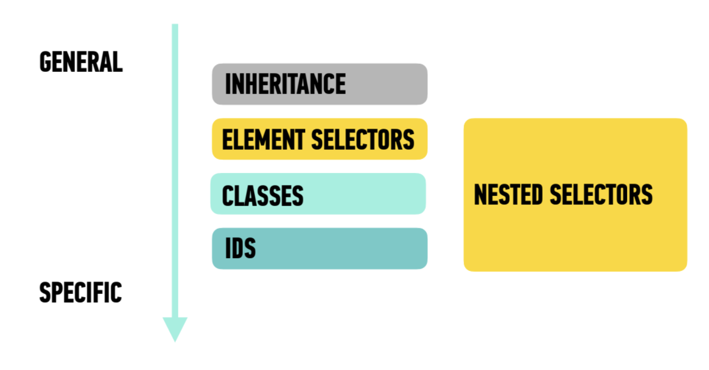

Inheritance
In CSS, just like with humans, inheritance is how certain properties are passed on from a parent element down to the child and grandchild elements.
If you specify the font-family, background-color & color properties on the body tag, they will apply to the children as well. Now, not all properties are inherited - for example, if the body had a border, the child elements would not inherit the border. The ones that are passed down are what we call base styles.
Here is a list of some of the most common inherited properties we will see during our time together. This is, by no means, a comprehensive list:
- color
- font-family
- font-size
- font-style
- font-weight
- letter-spacing
- list-style
- text-align
- text-indent
- text-transform
- word-spacing
This stays true until you override the code. We can do that here by adding a class to change the emphasized text color. We can also target our h1, h2, h3 & our li elements by changing the color and size and text alignment.
Nested Selectors
Remember how we talked about nesting? And we compared code to the Russian Matryoshka dolls? In this section, we will explore how this works.
Here are the most common types of selectors:
- Universal: addresses every single element individually
- Specific: addresses a specific type of element - for example, the code below addresses the li tag
- Descendant: addresses an element that is a descendant of another - for example, the code below addresses the li tag inside the ol tag.
- Multiple: addresses multiple elements, selectors separated by commas - for example, the code below addresses the h2 and the h3 elements
* { }What happens if we change the body selector to the universal selector?
li { }ol li { }How do we change the li tags in the second list without changing the ones in the first list?
h2, h3 { }Change the background color of the h2 and the h3 elements.
The way we address elements depends on where they are located within that stack, and the selector we choose can have a big impact.
Specificity is the Name of the Game!
The more specific rule will take precedence over the more general rule.

Let's look at the navigation for this example. Our code looks something like this:
<header>
<nav>
<a>
</a>
</nav>
</header>In order to change the <a> we have to get specific.
We could just select the anchor tag, right? Yes, but what happens if we have anchor tags elsewhere that we don't want to change? Scroll to the top and change the nav anchors but leave the resourceNav alone.
There is another important rule: when rules have the same specificity, the one that appears later in the stylesheet can win. Think about the term Cascading!
Adding Custom Fonts
There are a couple of ways to do this:
Google FontsWe are going to head over to Google Fonts now and choose a font for this document. Google Fonts is a 100% free option.
We will need to add code to both the head AND to our CSS file in order to make this work.
Adobe Fonts
For those of you with Creative Cloud access, you can also find fonts for your web projects here. If you don't have access to Creative Cloud, use Google Fonts instead.
Find a font here and add it to your web project. Then do the same thing you did for Google Fonts.
Jump Links
Read about jump linksThe navigation at the top of this page uses jump links to move to each section. Try clicking each section link.
Process Reflection
Working through this CSS exercise helped me understand that CSS is not only about making a page look good. I learned that inheritance allows some properties from a parent element, such as the body, to affect its children. I also saw that not every property is inherited, which made the idea of base styles clearer to me. The selector exercises helped me understand the difference between selecting an element, a class, a descendant, or several elements at the same time. Specificity was also important because I noticed that a more specific selector can override a more general one. When two rules had similar specificity, the later rule in the stylesheet could take effect, which helped me understand the word “cascading.”
Adding the page to my Interactive Sketchbook made relative paths more important. I had to think about where the CSS Basics folder was located and use ../ to move back to the main stylesheet and homepage. Using both the root CSS and child CSS also showed me how styles can be shared across a larger website while still having page-specific rules. One thing I had to troubleshoot was making sure the stylesheet paths matched the folder structure. The jump links were another useful part because the section IDs had to match the links exactly. I still want more practice with specificity, but I understand much better how CSS rules interact with each other.